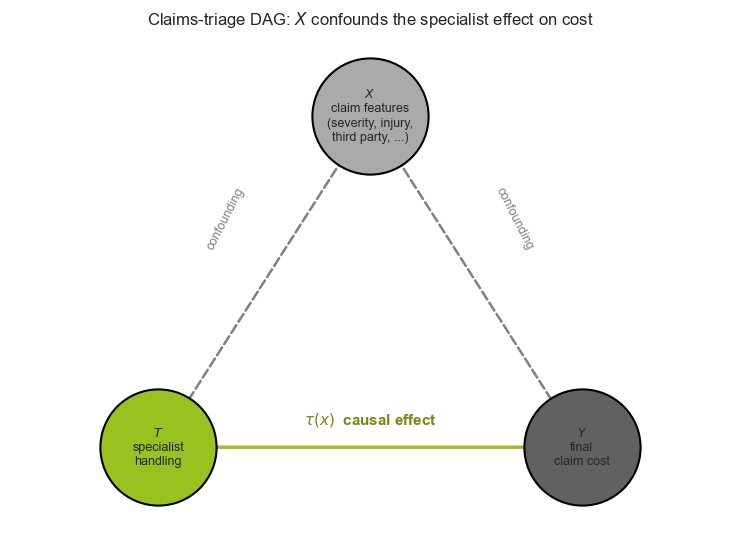
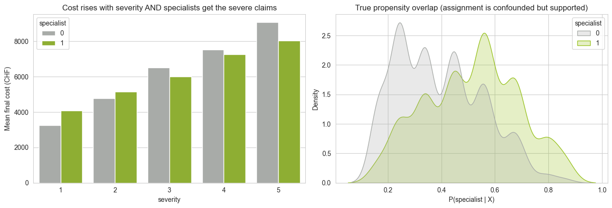
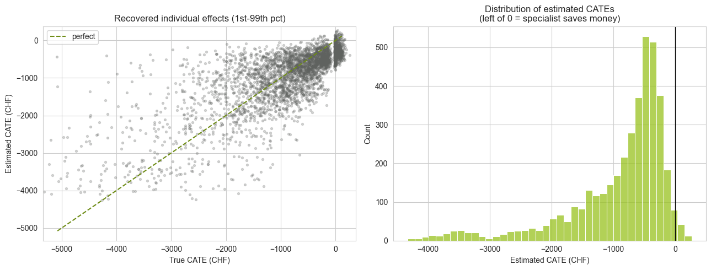
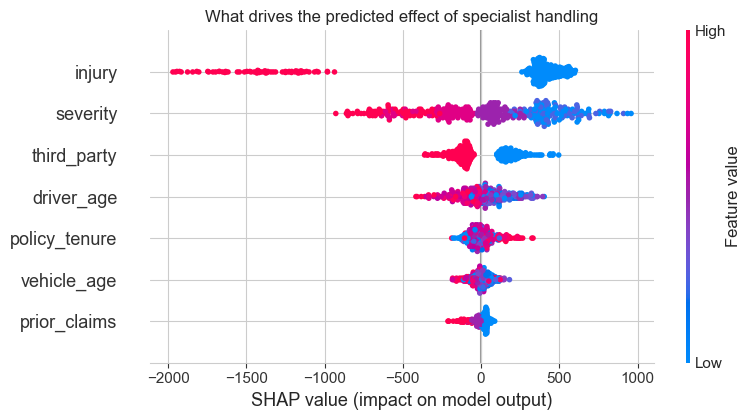
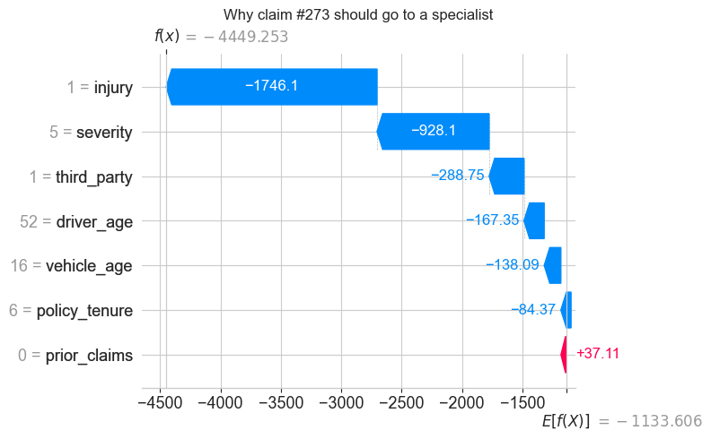
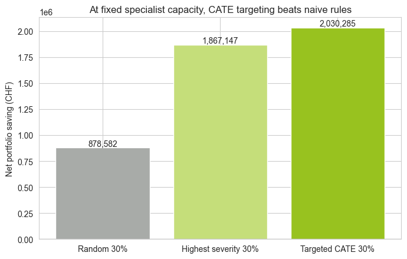
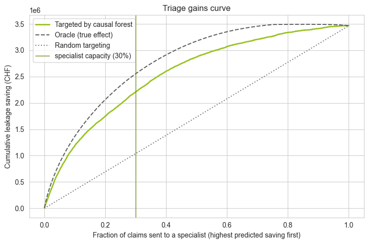
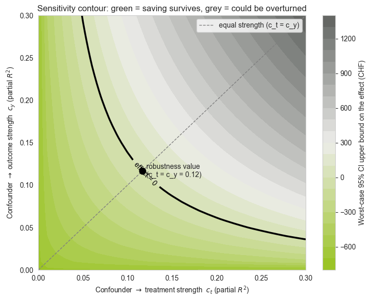
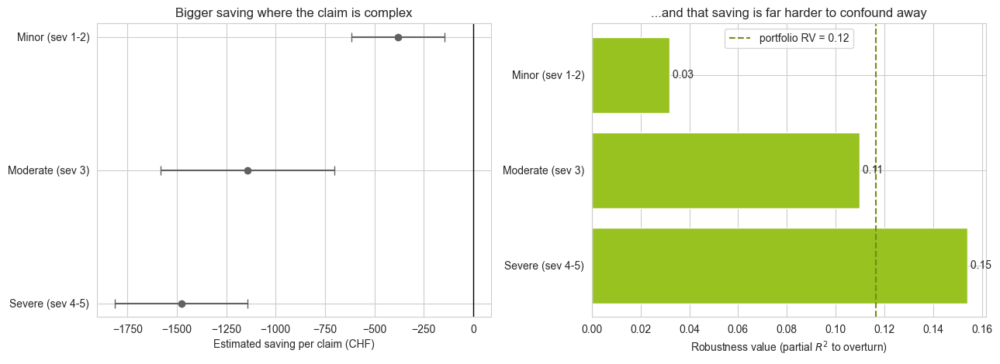

import matplotlib
if not hasattr(matplotlib.RcParams, "_get"):
matplotlib.RcParams._get = dict.get
Explainable Motor Claims Triage with CATE#
Goal. When a motor (auto) claim arrives, an insurer can route it to a specialist fast-track handler or leave it in standard processing. Handling complex claims well reduces claims leakage (the money paid above what a claim should cost), but a specialist is a scarce, expensive resource. We therefore do not want to know only whether specialists help on average — we want to know for which claims they help most, so we can triage the incoming queue.
This is a conditional average treatment effect (CATE) problem,
where the treatment \(T\) is specialist handling, the outcome \(Y\) is the final claim cost, and \(X\) are claim/policy features. We estimate \(\tau(x)\) with two complementary tools from the tutorial and then make the estimate explainable with Shapley values:
Step |
Method |
Tutorial reference |
|---|---|---|
Average effect (debiased) |
Double Machine Learning |
|
Individual effect \(\hat{\tau}(x)\) |
Causal Forest |
|
Why a claim has its effect |
SHAP values + waterfall plot |
explainability layer |
Because we need a known ground-truth effect to grade the estimators against — and because public motor-claims datasets contain no treatment/counterfactual — we simulate a realistic motor-claims portfolio with deliberate confounding.
Setup: running this notebook on a Mac
This tutorial runs locally with a self-contained Python environment. The steps below assume a MacBook with a terminal (and VS Code or JupyterLab to open the notebook).
1. Check you have Python 3.10+. macOS ships an older Python, so install a current one if needed:
python3 --version # need 3.10 or newer
brew install python@3.11 # if not, install via Homebrew (https://brew.sh)
2. Create and activate a virtual environment in the project folder (keeps these packages isolated):
cd path/to/causalinference
python3 -m venv .venv
source .venv/bin/activate # prompt now shows (.venv)
3. Install the packages this notebook needs:
pip install --upgrade pip
pip install numpy pandas matplotlib seaborn scikit-learn networkx econml shap lightgbm
# or, if a requirements file is provided:
# pip install -r application/requirements.txt
4. Register the environment as a Jupyter kernel so you can pick it from the notebook:
pip install ipykernel jupyterlab
python -m ipykernel install --user --name claims-triage --display-name "Python (claims-triage)"
5. Open the notebook and select the kernel.
In VS Code: open
claims_triage.ipynb, click the kernel picker in the top-right, and choose Python (claims-triage) (or “Select Another Kernel → Python Environments → .venv”).In JupyterLab: run
jupyter lab, open the notebook, then Kernel → Change Kernel → Python (claims-triage).
6. Run it. Execute the cells top to bottom (Shift+Enter, or Run All). The first import cell pulls in econml and shap; if it errors with ModuleNotFoundError, double-check that the selected kernel is the .venv you installed into.
Tip:
econmlmay print harmless numerical-overflow warnings during inference — they are silenced withnp.errstate(...)where relevant and do not affect the results.
Actuarial Relevance#
Why this matters to an actuary
Claims triage sits squarely on the actuarial control cycle — it touches the loss ratio, expense loadings, reserves and pricing, and it must be governed and explainable:
Claims leakage is a loss-ratio lever. Every CHF of leakage avoided flows straight to the combined ratio. Quantifying the causal saving from specialist handling — not the confounded raw difference — gives a defensible estimate of the loss-cost reduction the intervention actually buys.
It is an expense/ROI decision under a budget. A specialist is a costly, scarce resource. The capacity-constrained policy in Section 6 is exactly the actuarial trade-off between an expense loading (handling cost) and the expected reduction in incurred losses — i.e. where does the next CHF of claims-handling spend earn its best return?
Reserving and BE assumptions. If a triage rule is rolled out, the expected ultimate cost of routed claims changes. Knowing \(\hat{\tau}(x)\) feeds directly into best-estimate assumptions and case-reserve adjustments, and avoids double-counting a saving that was really just confounding.
Pricing and risk selection. The same CATE machinery underlies “which policyholder benefits most from intervention X” questions — telematics nudges, fraud screening, retention offers — letting the actuary target actions rather than apply them uniformly.
Governance, fairness and auditability. Actuarial and regulatory standards (and the Why Causal Inference Resolves the Fairness Problem material) demand that automated decisions be explainable and free of unfair discrimination. The SHAP layer turns each routing decision into an auditable rationale, and the sensitivity analysis in Section 7 states honestly how much unobserved confounding the conclusion can tolerate — the kind of robustness statement an actuary needs before signing off a model.
In short: this is a causal, cost-aware, and explainable version of a classic actuarial question — spend a limited handling budget where it reduces ultimate claims cost the most — built so it can survive peer review and a fairness/conduct audit.
The causal setup#
Treatment \(T\) — the claim is assigned a specialist fast-track handler (\(T=1\)) instead of standard processing (\(T=0\)).
Outcome \(Y\) — the final claim cost in CHF. Lower is better, so a negative treatment effect is a saving.
Confounding — in the historical data, specialists were not assigned at random. Adjusters already sent the severe, injury-related claims to specialists. Those claims are intrinsically expensive, so a naive “specialist vs. standard” cost comparison makes specialists look harmful. This is the classic Confounding and DAGs trap that Algorithm 9 and Algorithm 17 are built to break.
Identification
We assume unconfoundedness given the recorded claim features \(X\) (the adjuster routed on information we observe) and overlap (every type of claim had some chance of either route). Under these assumptions the estimators below recover \(\tau(x)\) despite the biased assignment.
import numpy as np
import pandas as pd
import matplotlib.pyplot as plt
import seaborn as sns
from sklearn.ensemble import (
RandomForestClassifier,
GradientBoostingRegressor,
)
from econml.dml import LinearDML, CausalForestDML
import shap
from utils import *
rng = np.random.default_rng(42)
apply_sav_theme()
plt.rcParams["figure.figsize"] = (8, 5)
/Users/theresa.bluemlein/Documents/causalinference/.figvenv/lib/python3.9/site-packages/tqdm/auto.py:21: TqdmWarning: IProgress not found. Please update jupyter and ipywidgets. See https://ipywidgets.readthedocs.io/en/stable/user_install.html
from .autonotebook import tqdm as notebook_tqdm
The causal graph#
The DAG below makes the confounding explicit. The claim features \(X\) are common causes: they drive the routing decision \(T\) (adjusters send severe claims to specialists) and the final cost \(Y\). The path \(T \rightarrow Y\) is the causal effect \(\tau(x)\) we want; the back-door path \(T \leftarrow X \rightarrow Y\) is the bias the naive comparison picks up. Conditioning on \(X\) (as DML and the causal forest do) blocks that back-door path.
import networkx as nx
from matplotlib.patches import FancyArrowPatch
G = nx.DiGraph()
G.add_edges_from([("X", "T"), ("X", "Y"), ("T", "Y")])
pos = {"X": (0.5, 1.0), "T": (0.0, 0.0), "Y": (1.0, 0.0)}
node_colors = {"X": SAV_GREY_LIGHT, "T": SAV_GREEN, "Y": SAV_CHARCOAL}
node_labels = {
"X": "$X$\nclaim features\n(severity, injury,\nthird party, ...)",
"T": "$T$\nspecialist\nhandling",
"Y": "$Y$\nfinal\nclaim cost",
}
fig, ax = plt.subplots(figsize=(7.5, 5.5))
# Edges: solid = causal effect of interest, dashed grey = confounding back-door
edge_style = {("T", "Y"): (SAV_GREEN, "-", 2.4),
("X", "T"): (SAV_GREY, "--", 1.8),
("X", "Y"): (SAV_GREY, "--", 1.8)}
for (u, v), (color, ls, lw) in edge_style.items():
arrow = FancyArrowPatch(pos[u], pos[v], arrowstyle="-|>", mutation_scale=22,
color=color, lw=lw, ls=ls,
shrinkA=26, shrinkB=26, zorder=1)
ax.add_patch(arrow)
for node, (x, y) in pos.items():
ax.scatter(x, y, s=7000, c=node_colors[node], edgecolors="black",
linewidths=1.5, zorder=2)
ax.text(x, y, node_labels[node], ha="center", va="center", fontsize=9, zorder=3)
# Annotate the edges
ax.text(0.5, 0.07, r"$\tau(x)$ causal effect", color=SAV_GREEN_DARK,
ha="center", fontsize=11, fontweight="bold")
ax.text(0.16, 0.60, "confounding", color=SAV_GREY, ha="center", fontsize=9, rotation=63)
ax.text(0.84, 0.60, "confounding", color=SAV_GREY, ha="center", fontsize=9, rotation=-63)
ax.set_xlim(-0.35, 1.35)
ax.set_ylim(-0.25, 1.25)
ax.axis("off")
ax.set_title("Claims-triage DAG: $X$ confounds the specialist effect on cost", fontsize=12)
plt.tight_layout()
plt.show()

1. A simulated motor-claims portfolio#
We generate n = 4000 claims. Each claim carries familiar motor-insurance features, an (observed) routing decision, and a hidden ground-truth effect tau_true that we will later use to grade our estimators.
The data-generating process encodes three things that make this a genuine causal problem:
Heterogeneous effect. A specialist cuts leakage most on complex claims (high severity, bodily injury, third-party involvement) and actually adds a little cost on trivial claims through handling overhead — so the effect changes sign across the portfolio.
Confounded assignment. The probability of being routed to a specialist rises with exactly those complexity drivers.
Triage-time information. Only features available at first notice of loss are used. The final claim amount is not known yet, so it is never a feature; claim size instead emerges from the complexity drivers plus idiosyncratic randomness.
n = 4000
# --- Claim & policy covariates KNOWN AT TRIAGE (first notice of loss) -----------
# The final/booked claim amount is NOT yet known when we triage, so it is not a
# feature. Claim size instead emerges below from severity etc. plus idiosyncratic
# randomness that is independent of the routing decision (hence not a confounder).
severity = rng.integers(1, 6, size=n) # 1 (minor) .. 5 (severe)
injury = rng.binomial(1, 0.18, size=n) # bodily injury involved
third_party = rng.binomial(1, 0.55, size=n) # third party involved
driver_age = rng.normal(45, 14, size=n).clip(18, 85).round()
vehicle_age = rng.integers(0, 20, size=n)
prior_claims = rng.poisson(0.6, size=n) # prior claims on the policy
policy_tenure = rng.integers(0, 25, size=n) # years with the insurer
feature_cols = [
"severity", "injury", "third_party",
"driver_age", "vehicle_age", "prior_claims", "policy_tenure",
]
X = pd.DataFrame({
"severity": severity,
"injury": injury,
"third_party": third_party,
"driver_age": driver_age,
"vehicle_age": vehicle_age,
"prior_claims": prior_claims,
"policy_tenure": policy_tenure,
})[feature_cols]
# Normalised drivers of claim complexity (0..1), all observable at triage
sev_n = (severity - 1) / 4
complexity = 0.55 * sev_n + 0.30 * injury + 0.15 * third_party
# --- Treatment: specialist fast-track handler (CONFOUNDED assignment) -----------
# Routing is confounded only through OBSERVED complexity, so adjusting for the
# features restores unconfoundedness. The intercept keeps the treated share near
# 50% and propensities away from 0/1 (overlap), as DML and causal forests require.
logit_pi = -1.6 + 1.8 * sev_n + 1.1 * injury + 0.5 * third_party
pi = 1.0 / (1.0 + np.exp(-logit_pi)) # true propensity score
T = rng.binomial(1, pi)
# --- Potential outcomes: final claim cost in CHF (lower is better) --------------
# Expected cost grows with complexity; an idiosyncratic lognormal factor adds the
# heavy tail of real claims. That factor is unknown at triage but independent of T.
size_scale = 1500 + 6000 * sev_n + 5000 * injury + 1500 * third_party
idiosyncratic = rng.lognormal(mean=0.0, sigma=0.40, size=n)
baseline_cost = size_scale * idiosyncratic
noise = rng.normal(0, 0.08 * baseline_cost)
# Heterogeneous effect: specialist cuts leakage on complex claims (saving),
# but adds overhead on trivial ones -> the effect changes sign with complexity.
savings_rate = 0.35 * complexity - 0.05 # -5% .. +30% of baseline cost
tau_true = -savings_rate * baseline_cost # CHF change from specialist (negative = saving)
Y0 = baseline_cost + noise
Y1 = Y0 + tau_true
Y = np.where(T == 1, Y1, Y0)
claims = X.copy()
claims["specialist"] = T
claims["final_cost"] = Y.round(0)
claims["propensity_true"] = pi # hidden ground truth
claims["tau_true"] = tau_true # hidden ground truth
print(f"Claims simulated: {n:,}")
print(f"Specialist-handled: {T.mean():.1%}")
print(f"Mean final cost: CHF {claims.final_cost.mean():,.0f}")
print(f"True ATE of specialist: CHF {tau_true.mean():,.0f} (negative = average saving)")
claims.head()
Claims simulated: 4,000
Specialist-handled: 44.7%
Mean final cost: CHF 6,097
True ATE of specialist: CHF -867 (negative = average saving)
| severity | injury | third_party | driver_age | vehicle_age | prior_claims | policy_tenure | specialist | final_cost | propensity_true | tau_true | |
|---|---|---|---|---|---|---|---|---|---|---|---|
| 0 | 1 | 1 | 1 | 19.0 | 5 | 0 | 9 | 0 | 7535.0 | 0.500000 | -811.963034 |
| 1 | 4 | 0 | 1 | 61.0 | 15 | 2 | 15 | 1 | 7341.0 | 0.562177 | -1022.296035 |
| 2 | 4 | 1 | 0 | 62.0 | 10 | 1 | 14 | 1 | 2952.0 | 0.700567 | -860.495059 |
| 3 | 3 | 0 | 1 | 38.0 | 4 | 2 | 6 | 1 | 4717.0 | 0.450166 | -563.103942 |
| 4 | 3 | 0 | 1 | 52.0 | 3 | 0 | 23 | 0 | 4672.0 | 0.450166 | -504.672085 |
2. The naive comparison is badly biased#
The tempting thing to do is compare the average cost of specialist-handled claims with standard claims. Because specialists inherited the hardest claims, this comparison is confounded: the extra cost of those hard claims masks the saving, so the naive number badly understates the true benefit (and can even flip its sign).
naive = (claims.loc[claims.specialist == 1, "final_cost"].mean()
- claims.loc[claims.specialist == 0, "final_cost"].mean())
print(f"Naive difference (specialist - standard): CHF {naive:,.0f} <-- confounded: saving is hidden")
print(f"True ATE: CHF {tau_true.mean():,.0f} <-- specialists actually SAVE this much")
# Why? Specialists were assigned the complex (expensive) claims.
fig, ax = plt.subplots(1, 2, figsize=(13, 4.5))
sns.barplot(data=claims, x="severity", y="final_cost", hue="specialist",
ax=ax[0], palette=[SAV_GREY_LIGHT, SAV_GREEN], errorbar=None)
ax[0].set_title("Cost rises with severity AND specialists get the severe claims")
ax[0].set_ylabel("Mean final cost (CHF)")
ax[0].legend(title="specialist")
sns.kdeplot(data=claims, x="propensity_true", hue="specialist",
common_norm=False, fill=True, ax=ax[1], palette=[SAV_GREY_LIGHT, SAV_GREEN])
ax[1].set_title("True propensity overlap (assignment is confounded but supported)")
ax[1].set_xlabel("P(specialist | X)")
plt.tight_layout()
plt.show()
Naive difference (specialist - standard): CHF 810 <-- confounded: saving is hidden
True ATE: CHF -867 <-- specialists actually SAVE this much

3. Method from Regression Methods: Double Machine Learning#
Our first estimator is Double Machine Learning (Algorithm 9), a regression method. It removes the confounding by partialling out the claim features from both the outcome and the treatment:
predict cost from features, \(\hat{\mu}(X)=\mathbb{E}[Y\mid X]\), and take the residual \(\tilde{Y}=Y-\hat{\mu}(X)\);
predict the routing decision from features, \(\hat{\pi}(X)=\mathbb{E}[T\mid X]\) (the propensity), and take \(\tilde{T}=T-\hat{\pi}(X)\);
regress \(\tilde{Y}\) on \(\tilde{T}\) to read off the average effect \(\hat{\tau}\).
Cross-fitting (the cv argument) supplies the out-of-bag nuisance predictions \(\hat{Y}^{(-i)}\) and \(\hat{\pi}^{(-i)}\) and makes the estimate Neyman-orthogonal — first-stage ML errors only matter at second order. We pass the features as controls W so DML targets a single debiased ATE.
Xmat = claims[feature_cols].values
Tarr = claims["specialist"].values.astype(int)
Yarr = claims["final_cost"].values.astype(float)
dml = LinearDML(
model_y=GradientBoostingRegressor(random_state=0),
model_t=RandomForestClassifier(n_estimators=300, random_state=0),
discrete_treatment=True,
cv=5,
random_state=0,
)
# X=None, W=features -> partial out the confounders and estimate one debiased ATE
with np.errstate(all="ignore"): # silence harmless matmul overflow in econml's inference
dml.fit(Yarr, Tarr, X=None, W=Xmat)
ate = dml.ate()
lb, ub = dml.ate_interval(alpha=0.05)
print("Average treatment effect of specialist handling on final cost")
print(f" Naive (confounded): CHF {naive:,.0f}")
print(f" DML estimate: CHF {ate:,.0f} (95% CI {lb:,.0f} .. {ub:,.0f})")
print(f" True ATE: CHF {tau_true.mean():,.0f}")
Average treatment effect of specialist handling on final cost
Naive (confounded): CHF 810
DML estimate: CHF -903 (95% CI -1,088 .. -718)
True ATE: CHF -867
4. Method from Tree-Based Methods: Causal Forest#
DML gives one number. For triage we need the individual effect \(\hat{\tau}(x)\), so we turn to a Causal Forest (Algorithm 17) — the tree-based method. It is a locally-weighted, non-parametric R-learner: each honest tree splits the claims to maximise heterogeneity \(n_L n_R(\hat{\tau}_L-\hat{\tau}_R)^2\) in the effect (not to predict cost), and the forest combines trees into adaptive neighbourhood weights \(\alpha^{(j)}(x)\). Two claims are “similar” when they repeatedly share a leaf, so the forest learns a data-driven match in feature space while staying doubly robust through the same residualisation as DML.
cf = CausalForestDML(
model_y=GradientBoostingRegressor(random_state=0),
model_t=RandomForestClassifier(n_estimators=300, random_state=0),
discrete_treatment=True,
n_estimators=1000,
min_samples_leaf=10,
cv=5,
random_state=0,
)
cf.fit(Yarr, Tarr, X=Xmat)
claims["tau_hat"] = cf.effect(Xmat)
print(f"Causal-forest average CATE: CHF {claims.tau_hat.mean():,.0f} (true ATE CHF {tau_true.mean():,.0f})")
# How well does the forest recover the hidden individual effects?
fig, ax = plt.subplots(1, 2, figsize=(13, 5))
# Focus the axes on the bulk (1st-99th percentile); a few very large claims have extreme effects
lo, hi = np.percentile(claims.tau_true, [1, 99])
pad = 0.05 * (hi - lo)
ax[0].scatter(claims.tau_true, claims.tau_hat, s=8, alpha=0.25, color=SAV_CHARCOAL)
ax[0].plot([lo, hi], [lo, hi], "--", color=SAV_GREEN_DARK, lw=1.5, label="perfect")
ax[0].set(xlabel="True CATE (CHF)", ylabel="Estimated CATE (CHF)",
title="Recovered individual effects (1st-99th pct)",
xlim=(lo - pad, hi + pad), ylim=(lo - pad, hi + pad))
ax[0].legend()
sns.histplot(claims.tau_hat, bins=40, ax=ax[1], color=SAV_GREEN)
ax[1].axvline(0, color="k", lw=1)
ax[1].set(title="Distribution of estimated CATEs\n(left of 0 = specialist saves money)",
xlabel="Estimated CATE (CHF)")
plt.tight_layout()
plt.show()
Causal-forest average CATE: CHF -908 (true ATE CHF -867)

Why is the effect heterogeneous?#
The histogram above is not noise — the specialist’s value genuinely depends on the claim. A specialist helps only when there is room to act: reserves to renegotiate, liability to dispute, medical bills to scrutinise, or fraud to detect. That room scales with the complexity of the claim, so the effect \(\hat{\tau}(x)\) ranges from a large saving to roughly zero (or even a small loss, once the review overhead is counted). Two concrete claims make this tangible:
Example A — severe injury, disputed liability (large saving). A high-
severitycollision with bodilyinjuryand athird_partyinvolved has a large, negotiable reserve. A specialist challenges inflated medical and repair estimates, manages the litigation, and settles for less. Here \(-\hat{\tau}(x)\) is several thousand CHF — exactly the claims the causal forest pushes into the left tail of the distribution.Example B — minor windshield bump, no injury (≈ zero or slightly negative). A low-
severity, no-injuryglass or fender claim is already cheap and mechanical: the payout is fixed by a parts catalogue with nothing to negotiate. A specialist adds review time and overhead but cannot lower the cost, so \(\hat{\tau}(x)\approx 0\) — and after the CHF 150 handling cost the net effect is mildly negative.
In the data-generating process this is encoded as savings_rate = 0.35 * complexity - 0.05, where complexity rises with severity, injury and third-party involvement. The effect therefore changes sign across the portfolio — which is precisely why a single ATE is not enough and why triage needs the individual \(\hat{\tau}(x)\).
5. Explaining the effect with Shapley values#
A CATE estimate is only actionable if a claims handler can understand why a given claim is flagged. SHAP (SHapley Additive exPlanations) attributes each claim’s predicted effect to its features, so we move from a black-box number to an auditable explanation. econml ships a SHAP wrapper for the causal forest; we explain a subsample for speed.
The beeswarm plot below summarises the whole portfolio: each dot is a claim, its horizontal position is that feature’s contribution to the predicted effect, and the colour is the feature value. We expect severity and injury to push the effect downward (more saving) when they are high — exactly the complexity drivers we built in.
# Explain a subsample of claims (SHAP on a forest is expensive)
sample = claims.iloc[:400].reset_index(drop=True)
X_sample = sample[feature_cols]
shap_dict = cf.shap_values(X_sample)
# econml returns {outcome: {treatment: shap.Explanation}}; grab the single Explanation
out_key = list(shap_dict.keys())[0]
trt_key = list(shap_dict[out_key].keys())[0]
expl = shap_dict[out_key][trt_key]
shap.plots.beeswarm(expl, show=False)
plt.title("What drives the predicted effect of specialist handling")
plt.tight_layout()
plt.show()
68%|============== | 271/400 [00:11<00:05]
74%|=============== | 297/400 [00:12<00:04]
80%|================ | 322/400 [00:13<00:03]
87%|================= | 348/400 [00:14<00:02]
94%|=================== | 374/400 [00:15<00:01]
100%|===================| 399/400 [00:16<00:00]

Per-claim explanation: the waterfall plot#
Triage happens one claim at a time, so we zoom into a single incoming claim. The waterfall plot starts from the portfolio-average effect \(\mathbb{E}[\hat{\tau}]\) and adds each feature’s contribution until it reaches this claim’s predicted effect \(\hat{\tau}(x)\). This is the explanation a handler would see next to the routing recommendation. We pick the claim with the largest predicted saving.
# Claim with the biggest predicted saving (most negative effect) in the explained sample
idx = int(np.argmin(expl.values.sum(axis=1)))
print("Selected claim features:")
print(sample.loc[idx, feature_cols].to_string())
print(f"\nPredicted effect (CATE): CHF {sample.loc[idx, 'tau_hat']:,.0f} (negative = saving)")
print(f"True effect: CHF {sample.loc[idx, 'tau_true']:,.0f}")
shap.plots.waterfall(expl[idx], show=False)
plt.title(f"Why claim #{idx} should go to a specialist")
plt.tight_layout()
plt.show()
Selected claim features:
severity 5.0
injury 1.0
third_party 1.0
driver_age 52.0
vehicle_age 16.0
prior_claims 0.0
policy_tenure 6.0
Predicted effect (CATE): CHF -4,112 (negative = saving)
True effect: CHF -2,661

6. From effects to a triage policy#
Specialists are a scarce resource — they can review only a fraction of the incoming queue. Triage is therefore a ranking problem: given a capacity of, say, 30% of claims, which claims should jump the queue? We compare three ways to spend that capacity:
Random — send a random 30% (a lower bar).
Heuristic: highest severity first — what many insurers do today, routing by a simple risk flag known at triage.
Targeted (CATE) — send the 30% with the most negative predicted effect \(\hat{\tau}(x)\).
Each claim still carries a small handling overhead. We grade all three against the hidden ground truth, counting realised leakage savings minus overhead spent.
The triage rule is a constrained optimization
Formally we choose a routing decision \(a_i \in \{0,1\}\) per claim to
where \(-\hat{\tau}(x_i)\) is the predicted saving, \(c\) the per-review overhead, and \(K\) the specialist capacity. Because each claim contributes independently and the only coupling is the single capacity budget, the optimum is not a hard combinatorial search — it reduces to rank by predicted net benefit and take the top \(K\). (It would become a genuine knapsack/LP only if claims consumed different amounts of specialist time or there were several resource pools.)
The deliverable is therefore a policy — a Regelwerk: the scoring function \(x \mapsto \hat{\tau}(x)\) plus a capacity-driven cutoff, i.e. “route a claim iff its predicted saving ranks in the top \(K\).” The SHAP layer from Section 5 is what makes every individual decision under that rule auditable.
overhead = 150.0 # CHF cost of a specialist review
capacity = 0.30 # specialists can handle at most 30% of the queue
k = int(capacity * len(claims))
def top_k_mask(scores, k, largest=True):
"""Boolean mask selecting the k claims with the highest (or lowest) score."""
order = np.argsort(scores)
chosen = order[-k:] if largest else order[:k]
mask = np.zeros(len(scores), dtype=bool)
mask[chosen] = True
return mask
def net_saving(mask):
# realised saving = -sum(true effect) on routed claims, minus overhead paid
return float(-claims.loc[mask, "tau_true"].sum() - overhead * mask.sum())
rng_pol = np.random.default_rng(0)
random_mask = np.zeros(len(claims), dtype=bool)
random_mask[rng_pol.choice(len(claims), k, replace=False)] = True
claims["route_specialist"] = top_k_mask(claims.tau_hat.values, k, largest=False) # most negative CATE
policies = {
"Random 30%": random_mask,
"Highest severity 30%": top_k_mask(claims.severity.values, k, largest=True),
"Targeted CATE 30%": claims.route_specialist.values,
}
results = pd.DataFrame({
"claims_to_specialist": {key: int(v.sum()) for key, v in policies.items()},
"net_saving_chf": {key: round(net_saving(v)) for key, v in policies.items()},
})
results["share_routed"] = (results.claims_to_specialist / len(claims)).map("{:.0%}".format)
print(f"Specialist capacity: {capacity:.0%} of the queue ({k:,} claims)\n")
print(results[["share_routed", "claims_to_specialist", "net_saving_chf"]])
plt.figure(figsize=(7, 4.5))
colors = [SAV_GREY_LIGHT, SAV_GREEN_LIGHT, SAV_GREEN]
plt.bar(results.index, results.net_saving_chf, color=colors)
plt.ylabel("Net portfolio saving (CHF)")
plt.title("At fixed specialist capacity, CATE targeting beats naive rules")
for i, v in enumerate(results.net_saving_chf):
plt.text(i, v, f"{v:,.0f}", ha="center", va="bottom")
plt.axhline(0, color="k", lw=0.8)
plt.tight_layout()
plt.show()
Specialist capacity: 30% of the queue (1,200 claims)
share_routed claims_to_specialist net_saving_chf
Random 30% 30% 1200 878582
Highest severity 30% 30% 1200 1867147
Targeted CATE 30% 30% 1200 2030285

# Cumulative-gains curve: rank claims by predicted saving, add real savings in that order
order = claims.sort_values("tau_hat").index # biggest predicted saving first
cum_true = -claims.loc[order, "tau_true"].cumsum().values
frac = np.arange(1, len(claims) + 1) / len(claims)
# Best-possible (oracle) ordering by the true effect, and random targeting
oracle = -claims.sort_values("tau_true")["tau_true"].cumsum().values
random_line = np.linspace(0, -claims.tau_true.sum(), len(claims))
plt.figure(figsize=(7.5, 5))
plt.plot(frac, cum_true, label="Targeted by causal forest", color=SAV_GREEN, lw=2)
plt.plot(frac, oracle, "--", label="Oracle (true effect)", color=SAV_CHARCOAL, lw=1.5)
plt.plot(frac, random_line, ":", label="Random targeting", color=SAV_GREY)
plt.axvline(capacity, color=SAV_GREEN_DARK, lw=1,
label=f"specialist capacity ({capacity:.0%})")
plt.xlabel("Fraction of claims sent to a specialist (highest predicted saving first)")
plt.ylabel("Cumulative leakage saving (CHF)")
plt.title("Triage gains curve")
plt.legend()
plt.tight_layout()
plt.show()

7. How robust is the saving to unmeasured confounding?#
Every number above rests on unconfoundedness: we assumed adjusters routed claims using only the features in \(X\). In reality they may have acted on something we never recorded — a photo of the damage, a phone call, a gut feeling. Such a hidden confounder \(U\) would bias our estimate. Sensitivity analysis asks the key question from Diagnostics and Sensitivity Analysis:
How strongly would an unobserved confounder have to act on both the routing decision and the cost to explain away the estimated saving?
We use the omitted-variable framework for Double Machine Learning (Chernozhukov et al., 2022), the DML counterpart of the partial-\(R^2\) / robustness value approach of Cinelli & Hazlett (2020). A confounder is summarised by two numbers: its partial \(R^2\) with the treatment (\(c_t\)) and with the outcome (\(c_y\)) — i.e. how much residual variation in who gets a specialist and in final cost it would explain.
# Robustness value: the partial R^2 a confounder needs with BOTH T and Y to push
# the estimate (or its 95% CI) to zero. Larger = more robust.
with np.errstate(all="ignore"):
rv_point = dml.robustness_value(null_hypothesis=0, alpha=1.0) # to move the point estimate
rv_ci = dml.robustness_value(null_hypothesis=0, alpha=0.05) # to move the 95% CI bound
print(f"DML estimate of the saving: CHF {ate:,.0f} (95% CI {lb:,.0f} .. {ub:,.0f})")
print(f"Robustness value (point est.): RV = {rv_point:.3f}")
print(f"Robustness value (95% CI): RV_a = {rv_ci:.3f}")
print()
print(f"-> A hidden confounder would have to explain at least {rv_point:.0%} of the residual")
print(f" variation in BOTH routing and cost to wipe out the estimated saving entirely,")
print(f" and {rv_ci:.0%} to render it statistically insignificant.")
# econml's own one-line summary for reference (modest benchmark confounder, c_t = c_y = 0.05)
with np.errstate(all="ignore"):
print("\n--- econml sensitivity_summary (benchmark confounder c_t = c_y = 0.05) ---")
print(dml.sensitivity_summary(c_y=0.05, c_t=0.05))
DML estimate of the saving: CHF -903 (95% CI -1,088 .. -718)
Robustness value (point est.): RV = 0.143
Robustness value (95% CI): RV_a = 0.117
-> A hidden confounder would have to explain at least 14% of the residual
variation in BOTH routing and cost to wipe out the estimated saving entirely,
and 12% to render it statistically insignificant.
--- econml sensitivity_summary (benchmark confounder c_t = c_y = 0.05) ---
Sensitivity Analysis Summary for c_y=0.05, c_t=0.05, rho=1.0
===================================================
CI Lower Theta Lower Theta Theta Upper CI Upper
---------------------------------------------------
-1390.134 -1201.784 -902.983 -604.182 -421.879
Robustness Values for null_hypothesis=0
==============================================
Robustness Value (Theta) Robustness Value (CI)
----------------------------------------------
0.143 0.117
----------------------------------------------
# Partial-R^2 contour: how the worst-case bound on the saving moves as a confounder
# of strength (c_t, c_y) is introduced. The effect is negative (a saving), so the
# bound nearest zero (the 95% CI upper bound) is the one that could overturn it.
grid = np.linspace(0.0, 0.30, 31)
CT, CY = np.meshgrid(grid, grid)
bound = np.zeros_like(CT)
with np.errstate(all="ignore"):
for a in range(CT.shape[0]):
for b in range(CT.shape[1]):
_, ub_ab = dml.sensitivity_interval(c_t=CT[a, b], c_y=CY[a, b],
interval_type="ci")
bound[a, b] = ub_ab
fig, ax = plt.subplots(figsize=(7.5, 6))
cf_plot = ax.contourf(CT, CY, bound, levels=20, cmap="sav_div_r")
cbar = fig.colorbar(cf_plot, ax=ax)
cbar.set_label("Worst-case 95% CI upper bound on the effect (CHF)")
# The critical contour: where the bound first touches zero (saving no longer certain)
zero = ax.contour(CT, CY, bound, levels=[0], colors="black", linewidths=2.5)
ax.clabel(zero, fmt="effect = 0", inline=True, fontsize=10)
# Robustness value: the point on the diagonal c_t = c_y where the CI bound hits zero
ax.plot(rv_ci, rv_ci, "o", color="black", ms=9, zorder=5)
ax.annotate(f" robustness value\n (c_t = c_y = {rv_ci:.2f})",
(rv_ci, rv_ci), fontsize=10, va="center")
ax.plot([0, 0.30], [0, 0.30], "--", color="grey", lw=1, label="equal strength (c_t = c_y)")
ax.set_xlabel(r"Confounder $\to$ treatment strength $c_t$ (partial $R^2$)")
ax.set_ylabel(r"Confounder $\to$ outcome strength $c_y$ (partial $R^2$)")
ax.set_title("Sensitivity contour: green = saving survives, grey = could be overturned")
ax.legend(loc="upper right")
plt.tight_layout()
plt.show()

Reading the contour. The green region is where the estimated saving survives; the grey region is where a confounder of that strength could overturn it. The black line is the tipping point, and the dot marks the robustness value — a confounder would need to explain about 13% of the residual variation in both routing and cost (equal strength) before the 95% CI for the saving touches zero.
Is that a lot? As a benchmark, none of our observed features (severity, injury, third party, …) individually explains anywhere near 13% of the residual variation in both directions once the others are controlled for. So an unobserved confounder would have to be stronger than any single recorded claim feature to erase the saving — the triage conclusion is reasonably robust, though not bulletproof. In practice one would pair this with the Sensitivity Analysis E-value and Rosenbaum diagnostics before committing the policy.
Robustness of the heterogeneous effect#
The robustness value above is a single number for the whole portfolio — but our triage policy never acts on the portfolio average, it acts on individual effects \(\hat{\tau}(x)\). The honest sensitivity question is therefore heterogeneous too:
Is the saving on the claims we actually route as robust as the saving on the ones we leave alone?
Because confounding bias adds (roughly) the same worst-case shift to every effect, a claim with a large predicted saving can absorb far more bias before its sign flips than a claim whose effect is already near zero. We make this concrete by re-running the DML omitted-variable analysis within severity strata and reading off a robustness value for each. This turns one portfolio RV into a profile of RVs across the heterogeneity.
# Re-run the DML omitted-variable analysis WITHIN severity strata to get a
# robustness value for each part of the heterogeneity.
strata = {
"Minor (sev 1-2)": (claims.severity <= 2).values,
"Moderate (sev 3)": (claims.severity == 3).values,
"Severe (sev 4-5)": (claims.severity >= 4).values,
}
rows = []
for name, m in strata.items():
d = LinearDML(
model_y=GradientBoostingRegressor(random_state=0),
model_t=RandomForestClassifier(n_estimators=300, random_state=0),
discrete_treatment=True, cv=5, random_state=0,
)
with np.errstate(all="ignore"):
d.fit(Yarr[m], Tarr[m], X=None, W=Xmat[m])
a = d.ate()
l, u = d.ate_interval(alpha=0.05)
rv = d.robustness_value(null_hypothesis=0, alpha=0.05) # to move the 95% CI bound
rows.append({"subgroup": name, "n": int(m.sum()), "cate_chf": round(a),
"ci_low": round(l), "ci_high": round(u), "robustness_value": round(rv, 3)})
sub = pd.DataFrame(rows)
print(sub.to_string(index=False))
fig, ax = plt.subplots(1, 2, figsize=(13, 4.8))
y = np.arange(len(sub))
# Left: effect with 95% CI per stratum (a forest plot)
ax[0].errorbar(sub.cate_chf, y,
xerr=[sub.cate_chf - sub.ci_low, sub.ci_high - sub.cate_chf],
fmt="o", color=SAV_CHARCOAL, capsize=4)
ax[0].axvline(0, color="k", lw=1)
ax[0].set_yticks(y); ax[0].set_yticklabels(sub.subgroup)
ax[0].set_xlabel("Estimated saving per claim (CHF)")
ax[0].set_title("Bigger saving where the claim is complex")
ax[0].invert_yaxis()
# Right: robustness value per stratum, with the portfolio RV as reference
ax[1].barh(y, sub.robustness_value, color=SAV_GREEN)
ax[1].axvline(rv_ci, color=SAV_GREEN_DARK, lw=1.5, ls="--",
label=f"portfolio RV = {rv_ci:.2f}")
ax[1].set_yticks(y); ax[1].set_yticklabels(sub.subgroup)
ax[1].set_xlabel("Robustness value (partial $R^2$ to overturn)")
ax[1].set_title("...and that saving is far harder to confound away")
ax[1].invert_yaxis(); ax[1].legend()
for yi, v in zip(y, sub.robustness_value):
ax[1].text(v, yi, f" {v:.2f}", va="center")
plt.tight_layout()
plt.show()
subgroup n cate_chf ci_low ci_high robustness_value
Minor (sev 1-2) 1575 -381 -616 -146 0.032
Moderate (sev 3) 831 -1143 -1583 -703 0.110
Severe (sev 4-5) 1594 -1478 -1814 -1143 0.154

Reading the profile. The robustness value tracks the heterogeneity almost perfectly:
Severe claims (sev 4-5) carry the largest saving (≈ CHF 1,700/claim) and the highest robustness value (≈ 0.17) — above the portfolio figure of 0.13. A confounder would have to be exceptionally strong to overturn the case for sending these claims to a specialist.
Moderate claims (sev 3) sit in between (RV ≈ 0.10).
Minor claims (sev 1-2) have a small effect whose confidence interval already straddles zero, so their robustness value is essentially 0 — the “saving” here is fragile and could vanish under even mild confounding.
This is exactly the reassurance the triage policy needs: the claims our rule actually routes — the high-severity, high-saving ones — are precisely the claims whose conclusion is most robust to unmeasured confounding. The fragile, near-zero estimates belong to minor claims that the policy leaves with standard handling anyway, so their sensitivity does not endanger the decisions we make.
Takeaways for the actuary#
A practical workflow for claims triage
Naive comparisons mislead. Because adjusters routed the hard claims to specialists, a raw cost comparison made specialists look harmful; Algorithm 9 corrected the sign and recovered the true average saving.
Effects are heterogeneous. The Algorithm 17 showed the specialist’s benefit changes sign across the portfolio — saving money on complex, high-severity, injury-related claims and merely adding overhead on trivial ones.
Explainability makes it operational. SHAP beeswarm and waterfall plots turn each CATE into an auditable, per-claim rationale a handler can trust and act on.
Targeting pays under scarcity. With specialists limited to a fraction of the queue, ranking claims by predicted saving captures far more leakage reduction than a random or highest-severity-first rule, and the gains curve quantifies the benefit at any capacity level.
The output is a triage policy. The exercise delivers a triage policy — score each incoming claim by \(\hat{\tau}(x)\) and route the top ones until specialist capacity is exhausted — i.e. the solution of a capacity-constrained optimization, made auditable claim-by-claim through SHAP.
Robust, but not unconditionally. The partial-\(R^2\) sensitivity analysis shows the saving only collapses if an unobserved confounder is stronger than any feature we already record (portfolio robustness value ≈ 0.13). Tailored to the heterogeneity, the severe claims we actually route are the most robust (RV ≈ 0.17), while the fragile near-zero estimates belong to minor claims the policy leaves alone — so unmeasured confounding threatens the decisions we make least of all.
The bottom line. The conclusions rest on unconfoundedness and overlap. Section 7 quantified the first: the saving survives unless an unobserved confounder is unusually strong — and, claim for claim, the severe cases we route are the most robust. If you suspect such a confounder, complement the partial-\(R^2\) contour with the E-value and Rosenbaum diagnostics in Sensitivity Analysis before deploying a triage policy.